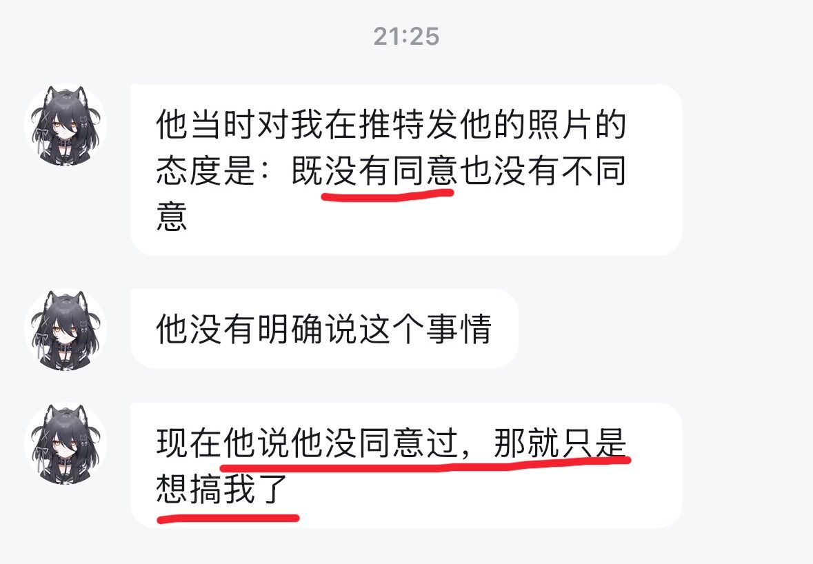

サイバー環状線
@CyberKanjousen
嗯哼

雾屿怜奈Official
@HuamanX09
本来是我和艾玛合作，我发他的女装照片收门槛和赞赏，然后我们对半分钱的，结果赚不到钱之后他发疯自爆我有什么办法呢🤣 @txqv3 是不是啊正义人士
サイバー環状線
@CyberKanjousen
「交易所当时对我搞合约的态度是：既没有盈利也没有不盈利
现在交易所不让我盈利，那就只是想搞我了」 https://t.co/7XO8msYyKA https://t.co/ETsw0J45Ze